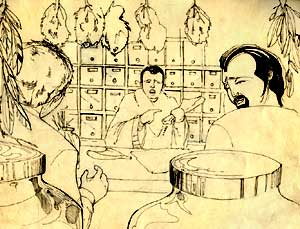

|

They bought as many unground 'dragon bones' from the apothecary as possible. Other people learned about their discovery and a lot of interest grew around the bones. Where did they come from? Were they really dragons' bones? What were the symbols written on them? Who had written these characters? |